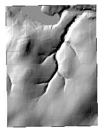
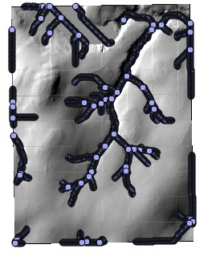
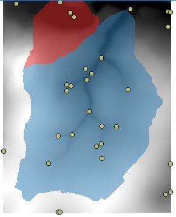
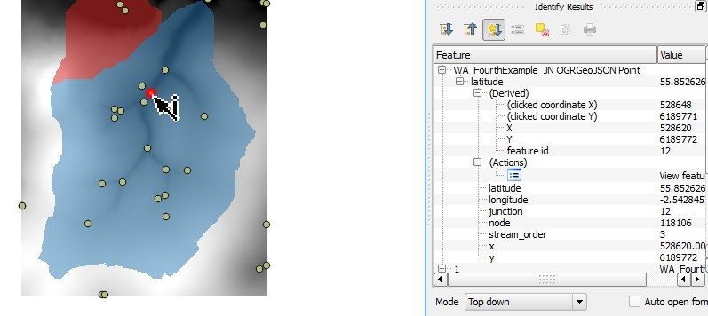
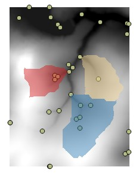
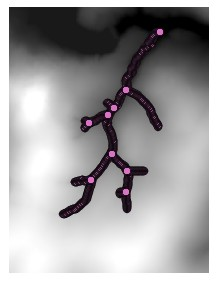
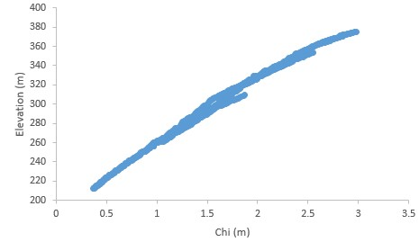

1. Introduction and overview
This document takes you through an inital LSDTopoTools analysis. Through the tutorials contained here we will demonstrate how our analysis programs run: they all share a common interface.
1.1. The basic structure of an analysis
Our analyses are packaged into separate programs. They are run from the Linux shell. All of our programs operate the same way:
-
You keep the program and the data in two different directories.
-
The directory with the data also has a parameter file, which contains instructions for the program.
-
You have to tell the program where the data directory is, as well as the name of the parameter file. You do this from the command line.
The basic structure looks like this:
1.1.1. Running a typical analysis
In the next section we will walk you though an analysis. However, reading this will help you understand where you are going, so we recommend you read the whole thing!
-
We usually keep two terminal windows open.
-
The first one is in the directory with the program. We call the program from here.
-
The second one is in the directory with the data. The main reason we keep this open is to use the
pwdcommand to copy the directory name into the first terminal window.
-
-
In the first window you call the program. It will look like this:
$ ./An_LSDTT_program.exe /LSDTopoTools/Topographic_projects/A_project AParameterFile.param -
The program name (
./An_LSDTT_program.exe), the directory name (/LSDTopoTools/Topographic_projects/A_project) and the parameter file name (AParameterFile.param) will change but all LSDTopoTools calls follow this same basic structure. -
Now, all parameter files have these basic elements in them:
read path: /LSDTopoTools/Topographic_projects/A_project write path: /LSDTopoTools/Topographic_projects/A_project read fname: Data_prefix write fname: Data_prefixYou need to change the path and fnames to reflect your data!
1.1.2. How do I change my parameter files?
You can edit your parameter files in a text editor: this is just a program that edits plain text. DO NOT use a word processor. These modify file types. There are many options for text editors but we like Brackets, or Atom is also a nice alternative.
However, editing the paths can be a bit annoying if you are moving data from place to place, so we have a python script, called LSDTTParamfileUpdater.py that updates the paths in the parameter file for you. The way you run that is:
-
Download the script into your data folder (i.e. in the second terminal window you have open above):
$ wget https://raw.githubusercontent.com/LSDtopotools/LSDAutomation/master/LSDTTParamfileUpdater.py -
Run the file
$ python LSDTTParamfileUpdater.py -
Once you’ve done this you are ready to call the program!
2. Basic analyses in LSDTopoTools using the LSDTT_BasicMetrics program
This chapter will walk you through some basic topographic analysis using our program LSDTT_BasicMetrics. This program can extract topographic metrics like slope, aspect and curvature. Along side these metrics it can also extract channel networks, and get drainage areas. The program is intended for everyday data processing. A number of these operations are available in GIS software, but we tend to prefer LSDTopoTools because:
-
The slope and curvature metrics in typical GIS software only uses information from the nearest pixels. We fit a polynomial surface from a neighbourhood of pixels. See Hurst et al., 2012, DOI: 10.1029/2011JF002057 and Grieve et al., 2016, doi:10.5194/esurf-4-627-2016 for the rationale.
-
Our channel extractions for the d8 method are based on the FASTSCAPE algorithm and are MUCH faster than running channel extraction in typical GIS software.
-
The program does some data preprocessing behind the scenes that you would need to do manually in a GIS.
-
We have automated some basin selection routines, which again you would need to do by hand in a GIS.
-
Our channel extraction spits out networks with drainage areas, locations, chi coordinates and all sorts of other goodies that again, would take ages on a GIS.
The examples in this section are used for both LSDTopoTools workshops as well as in the University of Edinburgh course, Eroding Landscapes.
2.1. Your first analysis using LSDTopoTools
We are going to run an LSDTopoTools program that is used for basic topographic analysis.
2.1.1. Download and run the setup tool
-
You need to open a terminal or shell window. If you don’t know what this is read the installation instructions.
-
First open a terminal window. This will be in either a vagrant server, a docker container, an NX window or your native linux system, depending on how you installed LSDTopoTools. Once you are in a terminal window, you will see some text and then a
$symbol which tells you that the linux machine is waiting for a command. Type your commands after this symbol (in docker this might be a#symbol). -
We are going to download a python script into your home directory. The
cd ~command gets you to your home diretory in linux. Go there and then download a file usingwget:$ cd ~ $ wget https://raw.githubusercontent.com/LSDtopotools/LSDAutomation/master/LSDTopoToolsSetup.pyMake sure the wgetcall (with the web address) is all on one line. -
Now we run the setup tool. Doing this will trigger a bunch of stuff that will take a few minutes. You could waste some time on the internet.
$ python LSDTopoToolsSetup.py -id 0 -
If you are on a native linux machine or Edinburgh servers, this will install LSDTopoTools in your home directory. In docker or vagrant it will install in the root directory (
/).
2.1.2. Add the basic analysis directory to your path
We find it is easiest to keep your data separate from the source code. But unless you want to have lots of terminal windows open you need to call LSDTopoTools from your data directories. That is rather annoying so to avoid that you need to add the location of the LSDTopoTools directories to your path.
In Vagrant or Docker, you do this with
$ PATH=$PATH:/LSDTopoTools/Git_projects/LSDTopoTools_AnalysisDriver/Analysis_driver;export PATHOn the university of Edinburgh servers you do this with:
$ PATH=$PATH:~/LSDTopoTools/Git_projects/LSDTopoTools_AnalysisDriver/Analysis_driver;export PATH
The difference between Edinburgh servers (or a native linux installation) and Docker/Vagrant is that LSDTopoTools is installed in you home directory on the former and in the root directory in the latter. So for Edinburgh you need a ~ to begin your path and on DockerVagrant you don’t.
|
| Adding a path in this way is not permanent so you need to do this each time you start a terminal session. If you want it to be permanent look up on the magical internets how to update your bashrc profile. |
2.1.3. Run a basic analysis
-
We need two terminal windows open. You already have one open, so open another one. I will colour note the terminal (Terminal 1 or Terminal 2) in each step
-
Terminal 1 In the first terminal do the following:
-
Terminal 1 In docker or vagrant:
$ cd /LSDTopoTools/Git_projects/LSDTopoTools_AnalysisDriver/Analysis_driver -
Terminal 1 In native linux or on Edinburgh’s servers type:
$ cd ~/LSDTopoTools/Git_projects/LSDTopoTools_AnalysisDriver/Analysis_driver
-
-
Terminal 1 We will explain all this stuff in more detail later, for now just execute the commands.
-
Terminal 2 Now in the other terminal window type:
-
For vagrant/docker:
$ cd /LSDTopoTools/Topographic_projects/LSDTT_workshop_data/ -
For native linux/Edinburgh:
$ cd ~/LSDTopoTools/Topographic_projects/LSDTT_workshop_data/
-
-
Terminal 2 We want to update the path names. So get the path updater script and run it:
$ wget https://raw.githubusercontent.com/LSDtopotools/LSDAutomation/master/LSDTTParamfileUpdater.py $ python LSDTTParamfileUpdater.py -
Terminal 1 Okay, now go back to the first terminal window. Type the following:
-
For docker/vagrant
$ ./LSDTT_BasicMetrics.out /LSDTopoTools/Topographic_projects/LSDTT_workshop_data/ WA_BasicMetrics01.driver -
For native Linux/Edinburgh servers
$ ./LSDTT_BasicMetrics.out ~/LSDTopoTools/Topographic_projects/LSDTT_workshop_data/ WA_BasicMetrics01.driver
-
-
Terminal 1 If you had all the directory names correct, you will get some text to screen that ends with a statement about hillshading. In fact all this does is print a hillshade of the raster.
-
You can look at this raster in QGIS. We have some instructions for QGIS, if you want to see instructions for adding data click here.
-
Open QGIS and load the raster. The new raster is in the same directory with your other data and is called
WA_FirstExample_hs.bil.The data will look like this:Figure 2. A hillshade of the Whiteadder catchement -
As you can see, the DEM has quite a few artefacts. There isn’t much we can do about that, I’m afraid.
2.2. Getting surface metrics
Don’t worry, things are going to get easier. We are going to do essentially the same thing we did in the previous section:
-
First we make sure directories are correct in the driver file. This should have already happened if you have run
LSDTTParamfileUpdater.py. -
Second, we call
LSDTT_BasicMetrics.outin the terminal.-
Run the program:
-
Terminal 1 We run the program again, but with a new driver file. Type the following:
-
For docker/vagrant
$ ./LSDTT_BasicMetrics.out /LSDTopoTools/Topographic_projects/LSDTT_workshop_data/ WA_BasicMetrics02.driver -
For native Linux/Edinburgh servers
$ ./LSDTT_BasicMetrics.out ~/LSDTopoTools/Topographic_projects/LSDTT_workshop_data/ WA_BasicMetrics02.driver
-
-
This does more stuff. We can look at the driver file:
# Parameters for extracting simple surface metrics # Comments are preceded by the hash symbol # These are parameters for the file i/o # IMPORTANT: You MUST make the write directory: the code will not work if it doesn't exist. read path: /LSDTopoTools/Topographic_projects/LSDTT_workshop_data/ write path: /LSDTopoTools/Topographic_projects/LSDTT_workshop_data/ read fname: WA write fname: WA_SecondExample channel heads fname: NULL # Parameters for surface metrics surface_fitting_radius: 11 print_slope: true print_aspect: true print_curvature: true print_tangential_curvature: true -
In this case the program is printing slope, aspect, curvature, and tangential curvature rasters. They have filenames that reflect their contents so have a look. Slope tells you how steep the landscape is, aspect which direction the surface is pointing, curvature how, uh, curvy the landscape is (mathematically it is how quickly slope changes in space) and the tangential curvature is how curvy the landscape is in the direction of steepest descent. Essentially tangential curvature tells you how tightly curved contours are and is useful for finding valleys.
-
The way these are calculated is by fitting a surface of radius
surface_fitting_radiusto the points in the DEM and then calculating derivatives of that surface.
-
2.2.1. Questions and tasks for surface metrics
-
Try changing the
surface_fitting_radius. What happens?
2.3. Drainage area and channel extraction
Finally, we will compute some drainage areas and extract a channel network. To do this run the driver file WA_BasicMetrics03.driver.
-
Run the program using:
$ ./LSDTT_BasicMetrics.out /LSDTopoTools/Topographic_projects/LSDTT_workshop_data/ WA_BasicMetrics03.driverOR
$ ./LSDTT_BasicMetrics.out ~/LSDTopoTools/Topographic_projects/LSDTT_workshop_data/ WA_BasicMetrics03.driverI am going to let you figure out which one to use…you will need to work this out on your own at some point.
-
Yet more stuff will come out. Some are drainage area rasters, but there is also a
csvfile,WA_ThirdExample_CN.csv. -
You will get a file with points, which you can load into QGIS. You can read about how to do that in our QGIS instructions. You will get something that looks a bit like this:
Figure 3. A simple channel network
2.3.1. Questions for channel extraction.
-
Try changing the
threshold_contributing_pixelsparameter. What happens to the channel network? -
More advanced: You can get a smoothed elevation raster with the following driver file line:
print_smoothed_elevation: true. Try creating a smoothed elevation raster and then using this smoothed raster for the drainage extraction. You will need to change theread fnameparameter to reflect the smoothed raster.
2.4. Summary
You now have seen the basic interface of LSDTopoTools programs, got a small taste of Linux, and know a few things about QGIS. From here you should be able to move on to more advanced topographic analysis.
3. More advanced options in LSDTT_BasicMetrics
One of the most common operations when analysing topographic data is extracting channel networks. We have an entire package for that, which has a number of different channel extraction algorithms.
However, many users just want channels extracted with the minimum of fuss and so we provide a simple channel profile extraction tool in LSDTT_BasicMetrics.
3.1. What channels do you want? Selecting basins
Sometimes you don’t want every channel in the landscape, but only particular channels. We have some basin selection tools for this.
The next driver file has some options for selecting basins (WA_BasicMetrics04.driver):
# These are parameters for the file i/o
# IMPORTANT: You MUST make the write directory: the code will not work if it doesn't exist.
read path: /exports/csce/datastore/geos/users/smudd/analysis_for_papers/Test_basicmetrics/
write path: /exports/csce/datastore/geos/users/smudd/analysis_for_papers/Test_basicmetrics/
read fname: WA
write fname: WA_FourthExample
channel heads fname: NULL
# Basic channel network
threshold_contributing_pixels: 5000
print_junctions_to_csv: true
# Convert to json
convert_csv_to_geojson: true
# Getting the basins
find_basins: true
minimum_basin_size_pixels: 10000
maximum_basin_size_pixels: 100000000
only_take_largest_basin: false
# Print the basin raster
print_basin_raster: trueThe key elements here are:
-
find_basins: trueThis tells the program to find specific basins -
minimum_basin_size_pixels: 10000This tells the program to get basins at least this big. They must be smaller thanmaximum_basin_size_pixels. -
only_take_largest_basinWhen false it finds all basins in the size window, whereas if tru you only get the larges basin. -
print_basin_raster: truethis prints a basin raster.
Run the driver and have a look at the new files.
If you load the basin raster in QGIS (it has the extension AllBasins)
You can try modifying some of the parameters like the minimum and maximum basin size and the flag only_take_largest_basin to see what you get.
3.1.1. Geojson data
If you use the switch convert_csv_to_geojson: true the csv files will be converted to geojson files which can be loaded directly as shapefiles in a GIS. Have a look at our QGIS documents; we have instructions for loading "vector" data. Geojson files contain GIS-readable vector data.
3.2. Picking basins
-
If you ran the previous driver you will get a geojson file that has
_JN.geojsonin the name. If you load this data in a GIS you will see something like this:Figure 5. Junctions in the DEMFigure 6. Junction information in the DEMYou can see in the table to the right the junction number is 12.
-
If you want to pick certain junctions you can make a text file and just write the junction numbers you want in that text file.
-
We have added a junctions file in the directory with the data called
selected_WA.junctions. It has a few junctions picked. The line to add to the parameter file are:BaselevelJunctions_file: /LSDTopoTools/Topographic_projects/LSDTT_workshop_data/selected_WA.junctionsThis line needs the entire path to your file. So you will probably need to go into the file and change the filename to match your directory structure. -
Run the next parameter file (
WA_BasicMetrics05.driver) and have a look at the basins generated. They will look something like this:Figure 7. Selected basins
3.3. An important note on basin selection.
In LSDTopoTools basins are selected on the basis of junctions. But junctions have two or more contributing channels! The basin selected by a junction includes the channel going downstream that stops one pixel before the next junction. In this way we can select basins that are representative of a given Strahler order.
3.4. Getting a channel network with more information
-
The next driver file is
WA_BasicMetrics06.driverand it looks like this:# These are parameters for the file i/o # IMPORTANT: You MUST make the write directory: the code will not work if it doesn't exist. read path: /exports/csce/datastore/geos/users/smudd/analysis_for_papers/Test_basicmetrics/ write path: /exports/csce/datastore/geos/users/smudd/analysis_for_papers/Test_basicmetrics/ read fname: WA write fname: WA_SixthExample channel heads fname: NULL # Basic channel network threshold_contributing_pixels: 5000 # Convert to json convert_csv_to_geojson: true # Getting the basins find_basins: true maximum_basin_size_pixels: 100000000 only_take_largest_basin: true # Print the basin raster print_chi_data_maps: true -
The key element of this file is
print_chi_data_maps: true. This prints a channel network that you can load into a GIS (the file has the extension_chi_data_map):Figure 8. The channel network produced from the chi data maps -
This looks a bit like the old channel network but the file contains much more information. If you open the csv file you will see the location of the points but also drainage area, elevation, flow distance, keys for identifying tributaries, and something called the chi coordinate, which you can read all about in a different part of the documentation.
-
You could, for example, make a chi-elevation plot using the data in the csv file:
Figure 9. A chi-elevation plot for the basin
Appendix A: Analysis options for the LSDTT_BasicMetrics program
All LSDTopoTools parameter files have the same format:
# comment
keyword: value
keywords with spaces: value
The parameter file has a specific format, but the filename can be anything you want. We tend to use the extensions .param and .driver for these files, but you could use the extension .MyDogSpot if that tickled your fancy.
|
A.1. Basic file input and output
| Keyword | Input type | Description |
|---|---|---|
write path |
string |
The path to which data is written. The code will NOT create a path: you need to make the write path before you start running the program. |
read path |
string |
The path from which data is read. |
write fname |
string |
The prefix of rasters to be written without extension.
For example if this is |
read fname |
string |
The filename of the raster to be read without extension. For example if the raster is |
channel heads fname |
string |
The filename of a channel heads file. You can import channel heads. If this is set to |
A.2. DEM preprocessing
| Keyword | Input type | Default value | Description |
|---|---|---|---|
minimum_elevation |
float |
0 |
If you have the |
maximum_elevation |
float |
30000 |
If you have the |
remove_seas |
bool |
false |
If true, this changes extreme value in the elevation to NoData. |
min_slope_for_fill |
float |
0.001 |
The minimum slope between pixels for use in the fill function. |
raster_is_filled |
bool |
false |
If true, the code assumes the raster is already filled and doesn’t perform the filling routine. This should save some time in computation, but make sure the raster really is filled or else you will get segmentation faults! |
only_check_parameters |
bool |
false |
If true, this checks parameter values but doesn’t run any analyses. Mainly used to see if raster files exist. |
A.3. Basic data output
| Keyword | Input type | Default value | Description |
|---|---|---|---|
convert_csv_to_geojson |
bool |
false |
If true, this converts any csv file (except for slope-area data) to geojson format. This format takes up much more space than csv (file sizes can be 10x larger) but is georeferenced and can be loaded directly into a GIS. Also useful for webmapping. It assumes your raster is in UTM coordinates, and prints points with latitude and longitude in WGS84. |
print_raster_without_seas |
bool |
false |
If true, prints a raster that has removed the seas (and very high peaks). This is useful if your NoDataValue is not registering and you use the |
print_fill_raster |
bool |
false |
If true, prints the fill raster. |
write_hillshade |
bool |
false |
If true, prints the hillshade raster. The format of this is stupidly different from other printing calls for a stupid inheritance reason. Try to ignore. Most GIS routines have a hillshading options but for some reason they look crappier than our in-house hillshading. I’m not sure why but if you want a hillshade I recommend using this function. |
print_distance_from_outlet |
bool |
false |
Prints a raster that gives the distance from the outlet. |
print_wiener_filtered_raster |
bool |
false |
This returns a filtered raster using something called a Wiener filter. It is a rather fancy way to smooth topography. Note that this uses a memory-hungry fourier transform and so will struggle or even crash on large DEMs. |
A.4. Surface fitting
| Keyword | Input type | Default value | Description |
|---|---|---|---|
surface_fitting_radius |
float |
30 |
The radius of the polynomial window over which the surface is fitted. If you have lidar data, we have found that a radius of 5-8 metres works best. |
print_smoothed_elevation |
bool |
false |
Prints a raster of elevations that have been smoothed over the polynomial window |
print_slope |
bool |
false |
If true, prints the topographic gradient raster. |
print_aspect |
bool |
false |
If true, prints the aspect raster. |
print_curvature |
bool |
false |
If true, prints the curvature raster. |
print_planform_curvature |
bool |
false |
If true, prints the planform curvature raster. That is the curvature of the countour lines. |
print_profile_curvature |
bool |
false |
If true, prints the profile curvature raster. That is the curvature along the line of steepest descent. |
print_tangential_curvature |
bool |
false |
If true, prints the tangential curvature raster. This is the curvature perpendicular to the line of steepest descent. A bit like the planform curvature but adjusted for slope. |
print_point_classification |
bool |
false |
If true, prints a point classification raster. This takes the value 1 if there is a peak, 2 if there is a depression and 3 if there is a saddle. |
A.5. Drainage area extraction
| Keyword | Input type | Default value | Description |
|---|---|---|---|
surface_fitting_radius |
float |
30 |
The radius of the polynomial window over which the surface is fitted. If you have lidar data, we have found that a radius of 5-8 metres works best. |
print_dinf_drainage_area_raster |
bool |
false |
If true, prints drainage area calculated using the d-infinity algorithm. |
print_d8_drainage_area_raster |
bool |
false |
If true, prints drainage area calculated using the d8 algorithm. This is simply the steepest of the 8 nearest neighbours. |
print_QuinnMD_drainage_area_raster |
bool |
false |
If true, prints drainage area calculated using the Quinn algorithm. This is a multiple flow direction algorithm. |
print_FreemanMD_drainage_area_raster |
bool |
false |
If true, prints drainage area calculated using the Freeman algorithm. This is a multiple flow direction algorithm. |
print_MD_drainage_area_raster |
bool |
false |
If true, prints drainage area calculated using the multidirectional algorithm. This is a multiple flow direction algorithm. Unlike the Quinn and Freeman algorithms it makes no attempt whatsoever to control dispersion. |
A.6. Basic channel extraction and printing
This simply gets a channel network and prints its location. It is a rather rudimentary way of seeing where channels are. More advanced options are in the next table.
| Keyword | Input type | Default value | Description |
|---|---|---|---|
print_stream_order_raster |
bool |
false |
If true, prints the stream order raster (but printing this to csv is more efficient, use |
print_channels_to_csv |
bool |
false |
Prints the channel network to a csv file. Includes stream order and other useful information. Much more memory efficient than printing the whole raster. It prints all channel nodes across the DEM rather than printing nodes upstream of selected basins. If you want to see the channels selected for chi analysis use |
print_junction_index_raster |
bool |
false |
If true, prints the junction index raster (but printing this to csv is more efficient, use |
print_junctions_to_csv |
bool |
false |
Prints the junction indices to a csv file. Much more memory efficient than printing the whole raster. |
A.7. More advanced channel and basin selection
These options give you a bit of control over selecting basins.
If you just want the largest complete basin, set find_largest_complete_basins: true AND maximum_basin_size_pixels: 10000000000000 (or any really big number).
|
| Keyword | Input type | Default value | Description |
|---|---|---|---|
find_basins |
bool |
false |
If this is true, it i) Gets all the basins in a DEM and takes those between the |
BaselevelJunctions_file |
string |
NULL |
You can write a file that contains a list of junction numbers (to see where they are, use |
CHeads_file |
string |
NULL |
This reads a channel heads file. It will supercede the |
threshold_contributing_pixels |
int |
1000 |
The number of pixels required to generate a channel (i.e., the source threshold). |
minimum_basin_size_pixels |
int |
5000 |
The minimum number of pixels in a basin for it to be retained. This operation works on the baselevel basins: subbasins within a large basin are retained. |
maximum_basin_size_pixels |
int |
500000 |
The maximum number of pixels in a basin for it to be retained. This is only used by |
extend_channel_to_node_before_receiver_junction |
bool |
true |
If true, the channel network will extend beyond selected baselevel junctions downstream until it reaches the pixel before the receiver junction. If false, the channel simply extends upstream from the selected basin. The reason for this switch is because if one if extracting basins by drainage order, then the, say, a 2nd order drainage basin starts at the node immediately upstream of the most upstream 3rd order junction. |
only_take_largest_basin |
bool (true or 1 will work) |
false |
If this is true, a chi map is created based only upon the largest basin in the raster. |
print_basin_raster |
bool |
false |
If true, prints a raster with the basins. IMPORTANT! This should be set to true if you want to use any of our python plotting functions that use basin information. Note that if this is true it will also print csv files with basin numbers and source numbers to assist plotting. |
print_chi_data_maps |
bool |
false |
This prints the channel networks (a bit like |
A.7.1. Basic parameters for the chi coordinate
| Keyword | Input type | Default value | Description |
|---|---|---|---|
A_0 |
float |
1 |
The A0 parameter (which nondimensionalises area) for chi analysis. This is in m2. Note that when A0 = 1 then the slope in chi space is the same as the channel steepness index (often denoted by ks). |
m_over_n |
float |
0.5 |
The m/n parameter (sometimes known as the concavity index) for calculating chi. Note that if you do any m/n analysis (either |
A.8. Example parameter files
We have a number of example parameter files in the repository LSDTT_chi_examples. The chapter on examples will walk you through the various things these files do.